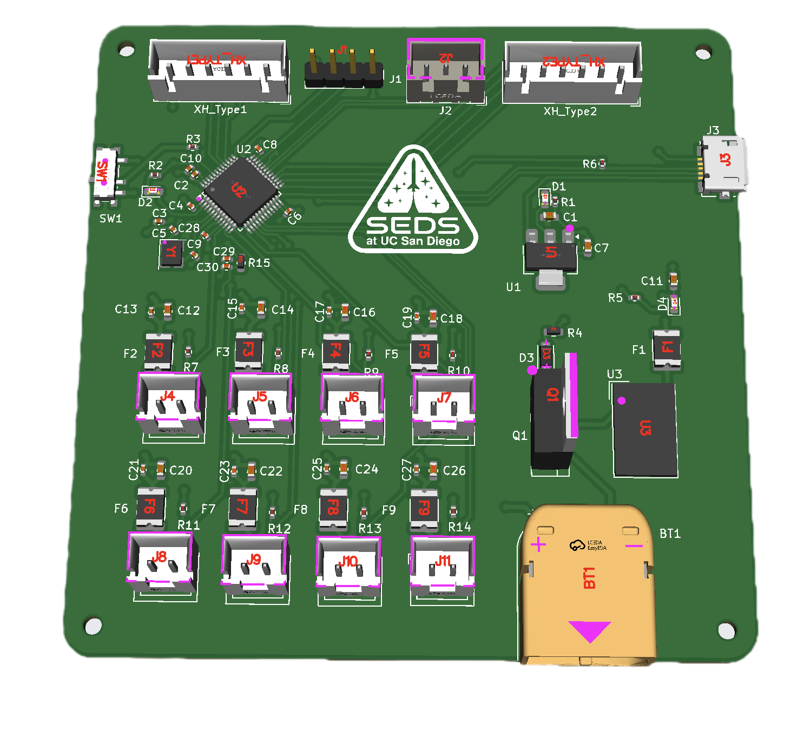
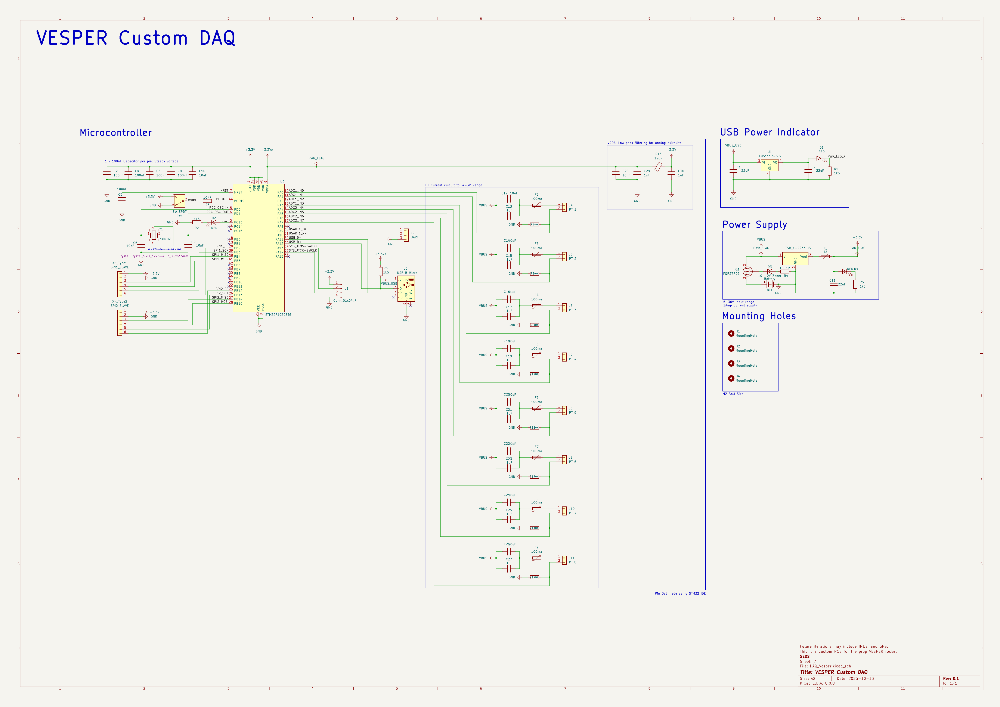
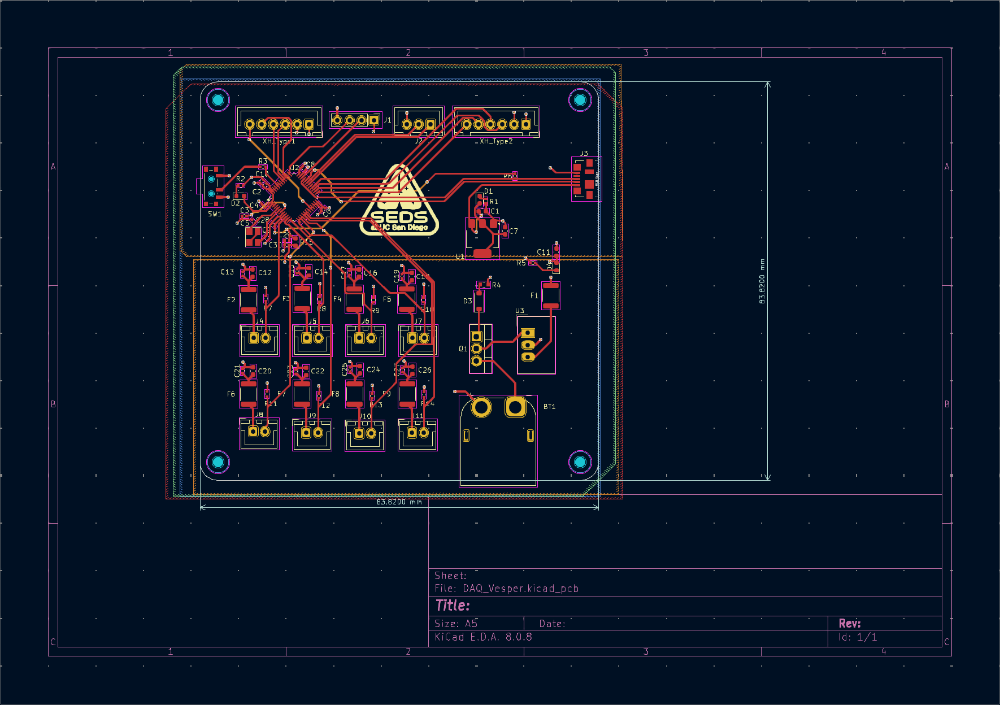
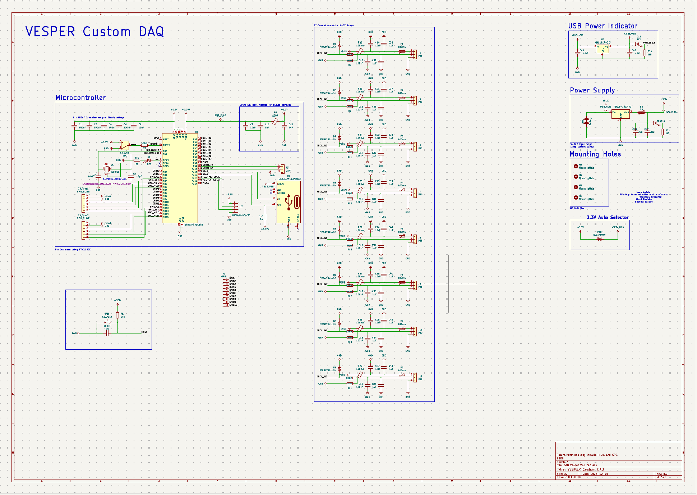
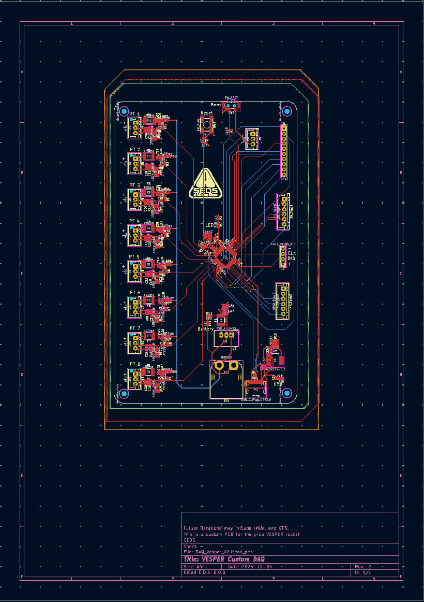

Overview
What Is This?
The DAQ System is a custom-designed data acquisition board built for SEDS UCSD's liquid-fuel rocket engine test stands and rockets. It captures analog sensor data across 8 channels — pressure transducers, thermocouples, load cells — and streams it in real time to a ground station during hot-fire tests.
I was responsible for the full hardware design from schematic to fabricated PCB, as well as the embedded firmware that runs on it.

Final DAQ board revision — fabricated and populated.
The Problem
Why Did This Need to Exist?
Rocket engine testing generates a massive amount of data in a very short window. A typical hot fire lasts only seconds, but in that window you need accurate readings from pressure transducers, temperature sensors, and load cells — all sampled fast enough to catch transient events like combustion instability or pressure spikes.
Off-the-shelf DAQ solutions exist but are expensive, bulky, and not designed for the specific sensor configurations we were running. We needed something compact, reliable, and tailored to our test stand and rockets — built to survive a desert environment and integrate directly with our ground station software.
My Approach
How I Tackled It
I was initally assigned a set of parameters such as number of data inputs, sampling rates, power requirments, and compatibility. From there I selected the microcontroller STM32F103 Series and laid out the power architecture.
The schematic was done in KiCad. I went through two major revisions before going to fab — the first revision surfaced grounding issues in the analog signal chain that were introducing noise on the pressure readings. The second revision separated the High voltage and Low voltage ground planes and added proper filtering capacitors, which shouldv'e helped with noise.
PCB layout was constrained by the physical envelope of the test stand and eventual rocket enclosure, so board size mattered. I prioritized keeping the analog signal paths short and away from switching power supply noise.
Hardware Design
PCB & Electronics
The board is a 4-layer PCB with dedicated power and ground planes. Key subsystems include:
Signal conditioning — instrumentation amplifiers on each analog input channel to boost and filter sensor signals before the ADC. This was critical for the thermocouple inputs, which produce millivolt-level signals that are highly susceptible to noise.
Power regulation — the board runs from a 12V battery supply stepped down to 3.3V and 5V rails. I used separate LDO regulators for the analog and digital sections to prevent digital switching noise from coupling into the sensor measurements.
Communication — data is streamed via UART to a radio module for wireless telemetry to the ground station. There's also a microSD slot for local logging as a redundant backup.
Fist Iteration


Second Iteration


Firmware
Embedded Software
The firmware runs on the STM32 and handles ADC sampling, data packetization, a range of choices of transmission — all running concurrently using FreeTOS.
The ADC is triggered by a hardware timer to ensure consistent sample timing regardless of what else the processor is doing. Sampled data can be filtered using a butterworth filter.
Results
What Happened
The board was successfully manufactured and tested. It captured steady signals with minmal noise.
Post-test analysis using the logged data confirmed the combustion chamber reached target operating pressure and identified a small pressure oscillation during the initial ignition sequence that hadn't been visible in previous less-instrumented tests. That finding directly informed the next iteration of the injector design.
What I Learned
Takeaways
Analog layout is unforgiving. The noise issues in rev 1 came from rushing the layout and not thinking carefully about return current paths. Now I start every mixed-signal board by drawing the ground plane topology before touching any component placement.
Test early and test on the bench. We built a bench simulation of the test stand sensors before the first field deployment, which caught a firmware timing bug that would have caused dropped samples during the high-pressure phase of the test.